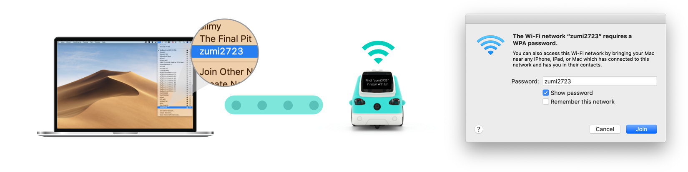
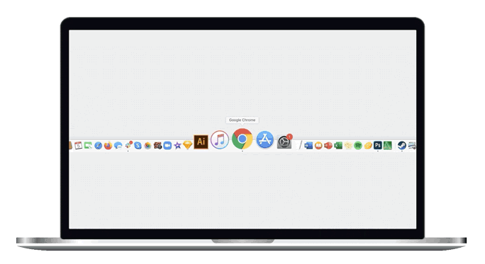
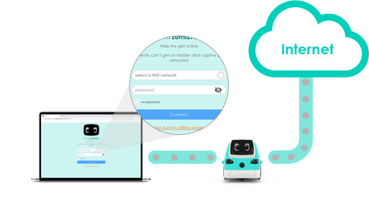

주미를 켜고 주미가 켜지면, 주미를 기기의 와이파이 리스트에서 찾아보세요. 기본 비밀번호는 주미 이름과 같습니다. 예) 만약 주미 이름이 zumi2723이라면 비밀번호도 zumi2723입니다.
브라우저에서 “zumidashboard.ai” 로 접속하세요. (대시보드는 크롬) 브라우저에서 가장 잘 동작합니다.) 만약 대시보드를 볼 수 있다면, 주미와 연결된 것입니다.
연결하고자하는 로컬 와이파이를 리스트에서 찾아 연결해주세요.
